Partie 6 - Stone Ocean
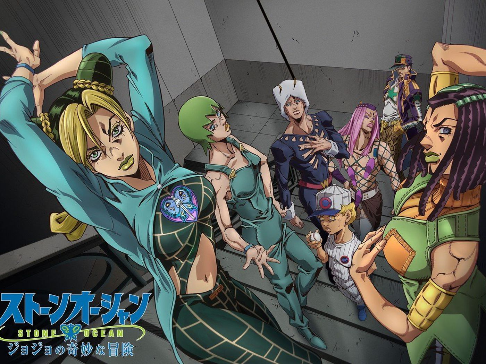
Explication de la partie
Dans cette partie, on suit Jolyne Kujo (fille de Jotaro Kujo, protagoniste de la partie 3).
Cette partie commence a la prison de Green Dolphin Street au Etats-Unis en 2011, après que Jolyne se soit faite accusée de meurtre et piegée par Enrico Pucci, ce dernier voulant venger Dio et éliminer la lignée Joestar.
La partie se termine au Cap Carneval en Floride.
Protagoniste - Jolyne Kujo
Comme dit précedemment, Jolyne est la fille de Jotaro et elle utilise le Stand Stone Free, qui lui permet de faire des fils a partir de son corps. Son but est de survivre et de s'évader de la prison de Green Dolphin Street après avoir été injustement condamnée.
Elle cherche ensuite à déjouer les plans d'Enrico Pucci, qui reussi a récuperer les "disques" de mémoire et de Stand de son père, volés par le prêtre Pucci.
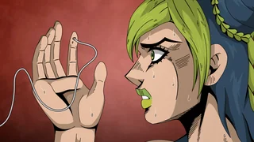
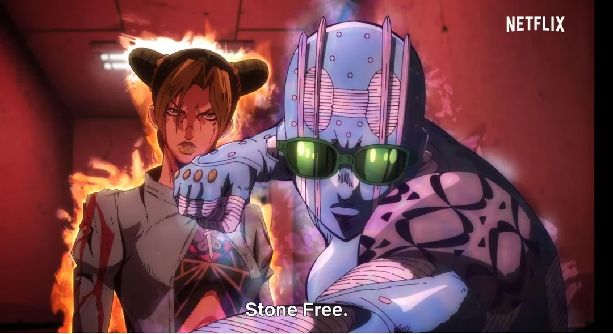
Les disques "volent" la personalité et le Stand de l'utilisateur et le rendent incapable de faire quoi que ce soit. (Nous verront plus tard pourquoi il est comme ça).
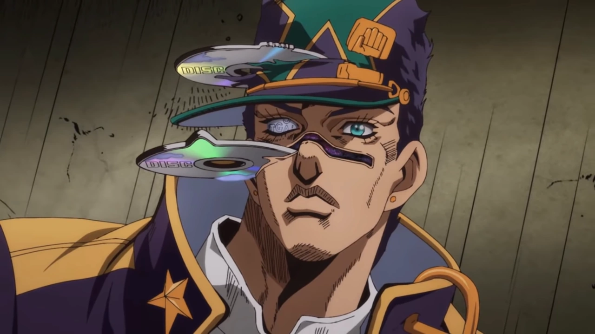
Antagoniste - Enrico Pucci
Pucci est le prêtre de la prison Green Dolphin Street et son but ultime est d'atteindre le « Paradis » en réalisant le plan de Dio : permettre à l'humanité de connaître et d'accepter son propre destin pour trouver le vrai bonheur.
Il possède un stand qu'il fait évoluer. En premier temps il manie le Stand White Snake qui lui permet d'extraire des disques a ses adversaires (c'est donc lui qui a enlever le Stand et la presonalité a Jotaro).
Ensuite il fait fusionner White avec le Gree Baby (fusion de l'os de Dio et de l'âme d'un utilisateur de Stand.) pour avoir le Stand C-Moon qui lui permet de manipuler la gravité.
Pour finir, Pucci suit les instructions du journal de Dio pour "atteindre le paradis". Il doit se rendre à un endroit précis (Cap Canaveral) lors d'une nouvelle lune, ce qui permet à C-Moon de se transformer en la forme ultime : Made in Heaven, qui lui permet d'accelérer le temps a l'infini, ce qui réinitialisera l'univers.
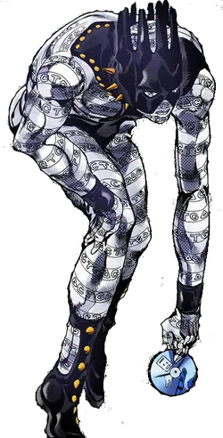
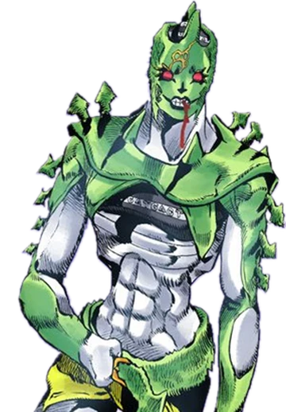

Alliés - Hermes, F.F., Weather Report, Anasui, Emporio
Commençons par parler de Hermes Costello, la Jobro de Jolyne, elle la soutient principalement par amitié, solidarité et intérêt commun. Elles se lient rapidement d'amitié en prison, et Ermes soutient Jolyne dans sa lutte contre Whitesnake.
De plus, Hermes a sa propre motivation : se venger de Sports Maxx, responsable de la mort de sa sœur, ce qui l'aligne avec le combat de Jolyne contre les ennemis de la prison.
Elle manie le Stand Kiss, Son pouvoir principal est la duplication d'objets (ou de personnes) par l'intermédiaire d'autocollants. Lorsqu'elle appose un autocollant en forme de lèvre sur un objet ou une personne, celui-ci est dupliqué.
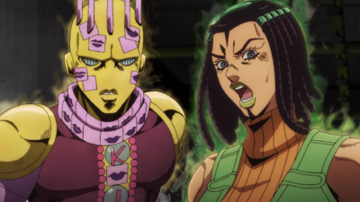
Ensuite parlons de F.F., elle aide Jolyne par gratitude et loyauté, car Jolyne l'a épargné et l'a aidé à développer une conscience propre, une personnalité et un sentiment d'identité, alors qu'elle n'était initialement qu'un Stand sous les ordres d'Enrico Pucci.
Jolyne est devenue sa raison de vivre, la poussant à la protéger.
Elle possède le Stand Foo Fighter (d'où son nom F.F.) qui lui permet de manipuler de son corps composé de plancton pour se régénérer, se tordre/plier, et tirer des projectiles.
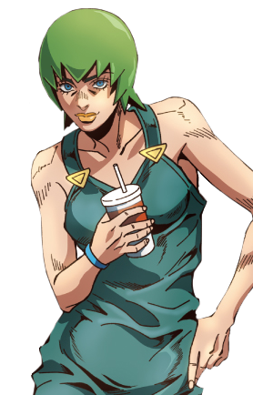
Passons ensuite a Weather Report, il aide Jolyne principalement par sens de la justice, loyauté et compassion, agissant comme un allié fiable en prison.
Amnésique au début, il se dévoue pour la protéger contre les ennemis et l'aide à livrer le disque Stand de Jotaro à l'asociation Speedwagon. Son lien se renforce par leur lutte commune contre le Père Pucci.
Il manie le Stand Weather Report, qui est capable de manipuler la météo et l'atmosphère à une échelle locale ou étendue.
Il contrôle vent, pluie, foudre et peut créer des micro-climats, voire des créatures (pluie de grenouilles). Sa capacité ultime, Heavy Weather, crée des arcs-en-ciel qui transforment les gens en escargots.
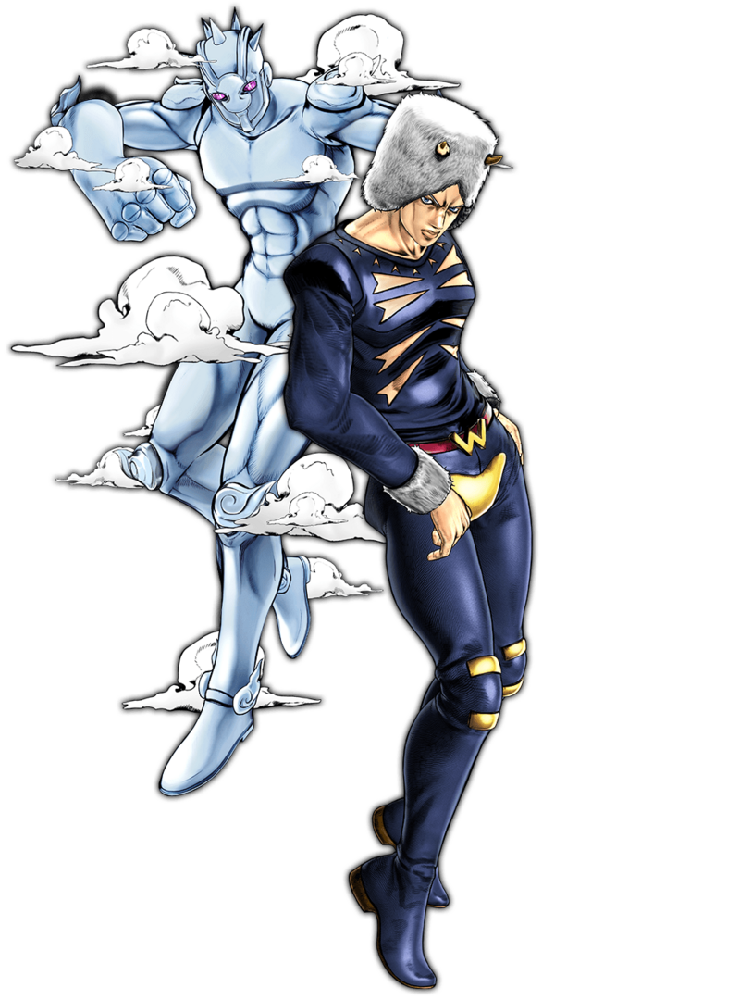
Ensuite parlon de Narciso Anasui il aide Jolyne Cujoh principalement par amour et fascination pour elle, développant une obsession amoureuse.
Il manie le Stand Diver Down qui permet à Anasui de "plonger" son Stand à l'intérieur de n'importe quelle matière solide, organique ou inorganique, pour la restructurer ou libérer des impacts stockés.
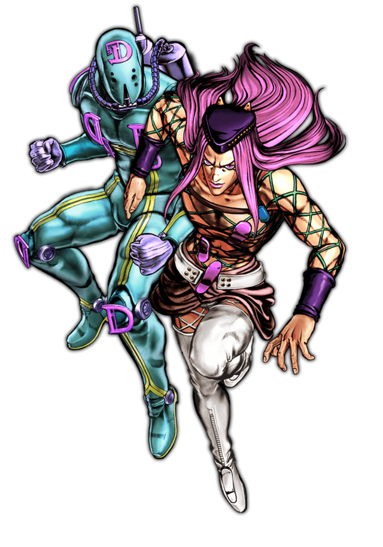
Pour finir parlons d'Emporio Alniño, il aide Jolyne principalement parce qu'il s'oppose aux agissements du Père Pucci au sein de la prison.
En tant qu'allié précieux, il utilise le Stand Burning Down The House, qui permet de créer des répliques d'objets détruits dans le passé comme une "salle fantôme" pour cacher Jolyne et ses compagnons, leur offrant un refuge sûr et des informations cruciales grâce à son ordinateur.
Emporio est celui qui reussi a battre Pucci en utilisant le Stand Weather Report, récupéré sous forme de disque, dans la pièce fantôme. Il inonde la pièce d'oxygène pur à 100%, empoisonnant mortellement Pucci.
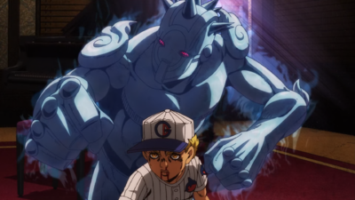